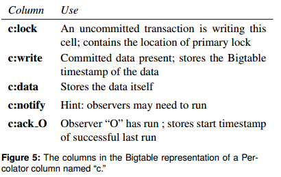

原文：Large-scale Incremental Processing Using Distributed Transactions and Notifications
使用轻量级通知+轻量级事务解决大规模增量系统问题。
翻译和阅读这篇论文的时候对麻烦的是对Google索引的增量处理做了哪些事不是很清楚。造成论文理解不深，以后再读。
概要
在搜索引擎系统中，文档被抓取后需要更新web索引，新的文档会持续到达，这就意味着包含大量已存在索引的存储库需要不断变化。现实中有很多这样的数据处理任务，都是因为一些很小的、独立的变化导致一个大型仓库的转变。这种类型的任务的性能往往受制于已存在设施的容量。数据库能够很好的处理这种任务，但是它不会用在如此大规模的数据上：Google的索引系统存储了十几个PB的数据，并且每天在几千台机器上处理数十亿次更新。MapReduce和其他批处理系统是为了大型批处理任务的效率而量身定制的，并不适合单独的处理小的更新。
我们已经构建了Percolator，这是一个用于逐步处理大型数据集更新的系统，并将其部署以创建Google网络搜索索引。通过使用基于Percolator的增量处理的索引系统替换基于批处理的索引系统，我们每天处理相同数量的文档，同时将Google搜索结果中文档的平均年龄缩短50％。（比如本篇文章在今天中午12点发布，在Google上能在下午一点被搜索到，那年龄就是1个小时）
介绍
在web索引系统中，系统开始会抓取互联网上的每一个页面，处理它们，同时在索引上维护一系列的不变量。比如，如果在多个URL下抓取到了相同的内容，只需要将PageRank最高的URL添加到索引中。每个外部链接也会被反向处理，让其锚文本附加到链接指向的页面上（链接中的锚文本往往能比较准确的评估其指向页面的内容）。链接反向处理还要考虑复制品（意指内容相同的多个页面）：在必要的情况下指向一个复制品的链接应该被指向最高PageRank的页面（这样能增强最高PageRank的页面的评估）。
反向链接：
假设把网页文档A中包含的指向B的链接命名为“A-B”，则对B来说这个“A-B”即为一个反向链接。
对某个网页文档来说，所有来自其他文档指向自己的链接都叫“反向链接”。一个网页文档的反向链接越多，说明这个文档的“知名度”或“支持率”越高。
锚文本（英语：Anchor text）是网页中关于超链接的一段描述，通常以文本和图片的方式出现。可以指向文中的某个位置，也可以指向其他网页。
这是一个批量处理任务，可以表示为一系列MapReduce操作：一个用于聚类重复（处理重复网站，将pageRank最高的加到索引中），一个用于链接反转（映射外部链接，添加锚文本）等。由于MapReduce限制了计算的并行性（MapReduce是组织型计算。计算是按照一定逻辑和安排执行的，该并行的地方并行，该有序的地方有序），所以很容易维护不变量;所有文件在开始下一步之前完成一个处理步骤。例如，当索引系统正在向当前最高的PageRank URL写入反向链接时，我们不必担心其PageRank同时发生变化;之前的MapReduce步骤已经确定了其PageRank。
现在，考虑如何在重新抓取一小部分网络后更新该索引。仅仅在新页面上运行MapReduces是不够的，因为例如新页面和其他网页之间存在链接。 MapReduces必须在整个存储库上再次运行，即在新页面和旧页面上运行。如果有足够的计算资源，MapReduce的可扩展性使这种方法可行，事实上，在这里描述的工作之前，Google的网络搜索索引就是以这种方式生成的。但是，重新处理整个Web会丢弃在早期运行中完成的工作，并使延迟与存储库的大小成比例，而不是更新的大小。
MapReduce 为什么要重新运行：
There are partial results of the index computation that are needed in the next incremental step. In the mapreduce case, it is not easy to save and retrieve these partial results. In percolator, it’s easy to store these partial results and retrieve them for the next time they are needed.
—- 引自 http://www.importnew.com/2896.html 论文作者的回复
MapReduce没有保存中间结果，而这些正是增量计算需要的信息。
那么MapReduce为什么不保存中间结果呢？这个还没有研究。
索引系统可以将存储库存储在DBMS中，并在使用事务维护不变量时更新单个文档。但是，现有的DBMS无法处理大量的数据：Google的索引系统在成千上万台机器上存储了数十PB的数据。像Bigtable这样的分布式存储系统可以扩展到我们的存储库的大小，但不提供工具来帮助程序员在并发更新的情况下维护数据不变量。
用于维护网络搜索索引任务的理想数据处理系统将针对增量处理进行优化;也就是说，它将允许我们维护一个非常大的文档存储库，并在抓取每个新文档时有效地对其进行更新。考虑到系统将同时处理许多小的更新，理想的系统也会提供机制来维持不变量，不管是并发更新还是保持跟踪哪些更新已被处理。
本文的其余部分描述了一个特定的增量处理系统：Percolator。 Percolator为用户提供对多PB资源库的随机访问。随机访问允许我们单独地处理文档，避免了MapReduce需要的存储库的全局扫描。为了实现高吞吐量，许多机器上的许多线程需要同时转换存储库，因此Percolator提供ACID兼容事务以使程序员更容易推断存储库的状态;我们目前实现快照隔离语义。
现在不清楚在有多版本控制的情况下，为什么要使用快照隔离呢？我觉得mvcc 比快照隔离好
除了推导并发性之外，增量系统的程序员需要跟踪增量计算的状态。为了帮助他们完成这项任务，Percolator提供了观察者：当用户指定的列发生变化时，系统调用的代码段。Percolator应用程序是由一系列观察员构成的;每个观察者通过写入表格来完成一项任务并为“下游”观察员创造更多的工作。外部进程通过将初始数据写入表中来触发链中的第一个观察者。
Percolator专门为增量处理而构建，并不打算替代大多数数据处理任务的现有解决方案。计算结果不能分解为小而多的更新（例如，对文件进行排序）可以通过MapReduce更好地处理。此外，计算应具有较强的一致性要求;否则，Bigtable就足够了。最后，计算在某个维度上应该非常大（总数据大小，转换所需的CPU等）;传统DBMS可以处理不适合MapReduce或Bigtable的较小计算。
在谷歌中，Percolator的主要应用是准备网页以包含在实时网络搜索索引中。通过将索引系统转换为增量系统，我们可以在抓取它们时处理单个文档。这将平均文档处理延迟减少了100倍，并且搜索结果中出现的文档的平均年龄下降了近50％（搜索结果的年龄包括除索引之外的延迟，例如文档之间的时间改变并被抓取）。该系统也被用来将页面渲染成图像;Percolator跟踪网页和他们所依赖的资源之间的关系，因此当任何依赖的资源发生变化时可以对页面进行重新处理。
设计
Percolator为大规模执行增量处理提供了两个主要抽象：通过随机访问库和观察者的ACID事务，这是组织增量计算的一种方式。
一个Percolator系统由三个二进制文件组成，它们在集群中的每台机器上运行：一个Percolator worker，一个Bigtable tablet服务器和一个GFS块服务器。所有的观察者都被链接到Percolator worker中，该工作者扫描Bigtable已更改的列（“通知”），并在工作进程中调用相应的观察者作为函数调用。观察者通过向Bigtable tablet服务器发送读取/写入RPC来执行事务，Bigtable tablet服务器将读/写RPC发送给GFS块服务器。该系统还依赖于两个小服务：时间戳oracle和轻量级锁服务。时间戳oracle提供严格增加的时间戳：正确操作快照隔离协议所需的属性。工作人员使用轻量级锁定服务来更有效地搜索脏（脏”原文dirty，意指某个数据发生了改变，等待后续处理，后续“脏”都为此含义，译者注）通知。
从程序员的角度来看，Percolator库由少量表格组成。每个表格都是按行和列索引的“单元格”的集合。每个单元格都包含一个值：未解释的字节数组。 （在内部，为了支持快照隔离，我们将每个单元格表示为由时间戳索引的一系列值。）
Percolator的设计受到两个前提的影响：一是必须运行在大规模数据上，二是并不要求非常低的延迟。例如，不严格的延迟要求让我们采取一种懒惰的方法来清除在失败的机器上运行的事务遗留的锁。这种懒惰使得方法易于实现，但可能会延迟事务提交数十秒。在运行OLTP任务的DBMS中，这种延迟是不可接受的，但在构建Web索引的增量处理系统中是可以容忍的。Percolator的事务管理缺乏一个中央总控：尤其是它缺少一个全局死锁检测器。这增加了冲突事务的延迟，但允许系统扩展到数千台机器。
懒惰的方法哪些可能延迟事务的提交？我觉得挺合理的，应该不会延迟。
答：觉得应该是一个还拥有primary锁的事务宕掉了，但是其他事务不确认它是否已经宕掉了。需要等到一定的时间之后再roll back这个宕掉的事务。因为roll back是严重影响性能的，不能轻易的roll back。
Bigtable概述
Percolator建立在Bigtable分布式存储系统之上。 Bigtable为用户呈现一个多维排序的映射：键是（行，列，时间戳）元组。 Bigtable在每一行上提供查找和更新操作，而Bigtable行事务可以对单个行进行原子读 - 修改 - 写操作。 Bigtable可处理PB级数据，并可在大量（不可靠）机器上可靠运行。
一个运行中的Bigtable包含一批tablet服务器，每个负责服务多个tablet（key空间内连续的域）。一个master负责协调控制各tablet服务器的操作，比如指示它们装载或卸载tablet。一个tablet在Google SSTable上被存储为一系列只读的文件。SSTable被存储在GFS；Bigtable依靠GFS来保护数据以防磁盘故障。Bigtable允许用户控制table的执行特征，比如将一批列分配为一个locality group。locality group中的列被存储在独立隔离的SSTable集合中，在其他列不需要被扫描时可以有效降低扫描成本。
需要好好看看gfs和bigtable的论文，上面的不能很好的理解
基于Bigtable来构建Percolator，也就大概确定了Percolator的架构样式。Percolator充分利用了Bigtable的接口：数据被组织到Bigtable行和列中，Percolator会将元数据存储在旁边特殊的列中（见图5）。Percolator的API和Bigtable的API也很相似：Percolator中大量API就是在特定的计算中封装了对Bigtable的操作。实现Percolator的挑战就是提供Bigtable没有的功能：多行事务和观察者框架。

notify列仅仅是一个hint值（可能是个bool值），表示是否需要触发通知。
ack列是一个简单的时间戳值，表示最近执行通知的观察者的开始时间。
data列是KV结构，key是时间戳，value是真实数据，包含多个entry。
write列包含的是写记录，也是KV结构，key是时间戳，value是各个时间戳下曾经写入的值。
lock列也是KV结构，key是时间戳，value是锁的内容。
事务
Percolator使用ACID快照隔离语义提供跨行跨表事务。Percolator的用户可使用必要的语言(当前是C++)编写它们的事务代码，然后加上对Percolator API的调用。图2表现了一段简化的基于内容hash的文档聚类分析程序。在这个例子中，如果Commit()返回false，则事务发生冲突（在这种情况下，因为两个具有相同内容哈希的URL被同时处理），并且应该在回退后重试。对Get()和Commit()的调用是阻塞式的；通过在一个线程池里同时运行很多事务来增强并行。
尽管不利用强事务的优势也可能做到数据增量处理，但事务使得用户能更方便的推导出系统状态，避免将难以发现的错误带到长期使用的存储库中。比如，在一个事务型的web索引系统中，开发者能保证一个原始文档的内容hash值永远和索引复制表中的值保持一致。而没有事务，一个不合时的冲击可能造成永久的不一致问题。事务也让构建最新、一致的索引表更简单。注意我们说的事务指的是跨行事务，而不是Bigtable提供的单行事务。
Percolator使用Bigtable中的时间戳维度，对每个数据项都存储多版本，以实现快照隔离。在一个事务中，按照某个时间戳读取出来的某个版本的数据就是一个隔离的快照，然后再用一个较迟的时间戳写入新的数据。快照隔离可以有效的解决“写-写”冲突：如果事务A和B并行运行，往某个cell执行写操作，大部分情况下都能正常提交。任何时间戳都代表了一个一致的快照，读取一个cell仅需要用给出的时间戳执行一个Bigtable查询；获取锁不是必要的。图3说明了快照隔离下事务之间的关系。
传统PDBMS为了实现分布式事务，可以集成基于磁盘访问管理的锁机制：PDBMS中每个节点都会间接访问磁盘上的数据，控制磁盘访问的锁机制就可以控制生杀大权，拒绝那些违反锁要求的访问请求。而Percolator是基于Bigtable的，它不会亲自控制对存储介质的访问，所以在实现分布式事务上，与传统的PDBMS相比，Percolator面对的是一系列不同的挑战。
还不是很理解，但提供了一个信息，PDBMS如何实现分布式事务
相比之下，Percolator中的任何节点都可以发出请求，直接修改Bigtable中的状态：没有太好的办法来拦截并分配锁。所以，Percolator一定要明确的维护锁。锁必须持久化以防机器故障；如果一个锁在两阶段提交之间消失，系统可能错误的提交两个会冲突的事务。锁服务一定要高吞吐量，因为几千台机器将会并行的请求锁。锁服务应该也是低延迟的；每个Get()操作都需要申请“读取锁”，我们倾向于最小化延迟。给出这些需求，锁服务器需要冗余备份（以防异常故障）、分布式和负载均衡（以解决负载），并需要持久化存储。Bigtable作为存储介质，可以满足所有我们的需求，所以Percolator将锁和数据存储在同一行，用特殊的内存列，访问某行数据时Percolator将在一个Bigtable行事务中对同行的锁执行读取和修改。
我们现在考虑事务协议的更多细节。图6展现了Percolator事务的伪代码，图4展现了在执行事务期间Percolator数据和元数据的布局。图5中描述了系统如何使用这些不同的元数据列。事务构造器向oracle请求一个开始的时间戳（第六行），它决定了Get()将会看到的一致性快照。Set()操作将被缓冲（第七行），直到Commit()被调用。提交被缓冲的Set操作的基本途径是两阶段提交，被客户端协调控制。不同机器上基于Bigtable行事务执行各自的操作，并相互影响，最终实现整体的分布式事务。1
2
3
4
5
6
7
8
9
10
11
12
13
14
15
16
17
18
19
20
21
22
23
24
25
26
27
28
29
30
31
32
33
34
35
36
37
38
39
40
41
42
43
44
45
46
47
48
49
50
51
52
53
54
55
56
57
58
59
60
61
62
63
64
65
66
67class Transaction {
struct Write{ Row row; Column: col; string value;};
vector<Write> writes_;
int start_ts_;
Transaction():start_ts_(orcle.GetTimestamp()) {}
void Set(Write w) {writes_.push_back(w);}
bool Get(Row row, Column c, string* value) {
while(true) {
bigtable::Txn = bigtable::StartRowTransaction(row);
// Check for locks that signal concurrent writes.
if (T.Read(row, c+"locks", [0, start_ts_])) {
// There is a pending lock; try to clean it and wait
BackoffAndMaybeCleanupLock(row, c);
continue;
}
}
// Find the latest write below our start_timestamp.
latest_write = T.Read(row, c+"write", [0, start_ts_]);
if(!latest_write.found()) return false; // no data
int data_ts = latest_write.start_timestamp();
*value = T.Read(row, c+"data", [data_ts, data_ts]);
return true;
}
// prewrite tries to lock cell w, returning false in case of conflict.
bool Prewrite(Write w, Write primary) {
Column c = w.col;
bigtable::Txn T = bigtable::StartRowTransaction(w.row);
// abort on writes after our start stimestamp ...
if (T.Read(w.row, c+"write", [start_ts_, max])) return false;
// ... or locks at any timestamp.
if (T.Read(w.row, c+"lock", [0, max])) return false;
T.Write(w.row, c+"data", start_ts_, w.value);
T.Write(w.row, c+"lock", start_ts_,
{primary.row, primary.col}); // The primary's location.
return T.Commit();
}
bool Commit() {
Write primary = write_[0];
vector<Write> secondaries(write_.begin() + 1, write_.end());
if (!Prewrite(primary, primary)) return false;
for (Write w : secondaries)
if (!Prewrite(w, primary)) return false;
int commit_ts = orcle.GetTimestamp();
// Commit primary first.
Write p = primary;
bigtable::Txn T = bigtable::StartRowTransaction(p.row);
if (!T.Read(p.row, p.col+"lock", [start_ts_, start_ts_]))
return false; // aborted while working
T.Write(p.row, p.col+"write", commit_ts,
start_ts_); // Pointer to data written at start_ts_
T.Erase(p.row, p.col+"lock", commit_ts);
if(!T.Commit()) return false; // commit point
// Second phase: write our write records for secondary cells.
for (Write w:secondaries) {
bigtable::write(w.row, w.col+"write", commit_ts, start_ts_);
bigtable::Erase(w.row, w.col+"lock", commit_ts);
}
return true;
}
}; // class Transaction
伪码本来想贴图片的，效果不好还是自己敲吧！解释再多还是不如源码清晰啊！
但是代码的正确性还是要好好考量的。
在Commit的第一阶段(“预写”，prewrite)，我们尝试锁住所有被写的cell。（为了处理客户端失败的情况，我们指派一个任意锁为“primary”；后续会讨论此机制）事务在每个被写的cell上读取元数据来检查冲突。有两种冲突场景：如果事务在它的开始时间戳之后看见另一个写记录，它会取消（32行）；这是“写-写”冲突，也就是快照隔离机制所重点保护的情况。如果事务在任意时间戳看见另一个锁，它也取消（34行）：如果看到的锁在我们的开始时间戳之前，可能提交的事务已经提交了却因为某种原因推迟了锁的释放，但是这种情况可能性不大，保险起见所以取消。如果没有冲突，我们将锁和数据写到各自cell的开始时间戳下（36-38行）
如果没有cell发生冲突，事务可以提交并执行到第二阶段。在第二阶段的开始，客户端从oracle获取提交时间戳（48行）。然后，在每个cell（从“primary”开始），客户端释放它的锁，替换锁为一个写记录以让其他读事务知晓。读过程中看到写记录就可以确定它所在时间戳下的新数据已经完成了提交，并可以用它的时间戳作为“指针”找到提交的真实数据。一旦“primary”的写记录可见了（58行），其他读事务就会知晓新数据已写入，所以事务必须提交。
一个Get()操作第一步是在时间戳范围 [0,开始时间戳]（是右开区间） 内检查有没有锁，这个范围是在此次事务快照所有可见的时间戳（12行）。如果看到一个锁，表示另一个事务在并发的写这个cell，所以读事务必须等待直到此锁释放。如果没有锁出现,Get()操作在时间戳范围内读取最近的写记录（19行）然后返回它的时间戳对应的数据项（22行）。
由于客户端随时可能故障，导致了事务处理的复杂度（Bigtable可保证tablet服务器故障不影响系统，因为Bigtable确保写锁持久存在）。如果一个客户端在一个事务被提交时发生故障，锁将被遗弃。Percolator必须清理这些锁，否则他们将导致将来的事务被非预期的挂起。Percolator用一个懒惰的途径来实现清理：当一个事务A遭遇一个被事务B遗弃的锁，A可以确定B遭遇故障，并清除它的锁。
然而希望A很准确的判断出B失败是十分困难的；可能发生这样的情况，A准备清理B的事务，而事实上B并未故障还在尝试提交事务，我们必须想办法避免。现在就要详细介绍一下上面已经提到过的“primary”概念。Percolator在每个事务中会对任意的提交或者清理操作指定一个cell作为同步点。这个cell的锁被称之为“primary锁”。A和B在哪个锁是primary上达成一致（primary锁的位置被写入所有cell的锁中）。执行一个清理或提交操作都需要修改primary锁；这个修改操作会在一个Bigtable行事务之下执行，所以只有一个操作可以成功。特别的，在B提交之前，它必须检查它依然拥有primary锁，提交时会将它替换为一个写记录。在A删除B的锁之前，A也必须检查primary锁来保证B没有提交；如果primary锁依然存在它就能安全的删除B的锁。
如果primary写成功而secondaries中一些没有写成功那么如何保证事务的一致性呢？文中好像没有提到。
答：刚这样想下面就解释了，也是我没有记住。其实secondaries已经是写成功了的，只要将其他事务到来时只要将锁清掉同时增加写记录就行了
如果一个客户端在第二阶段提交时崩溃，一个事务将错过提交点（它已经写过至少一个写记录），而且出现未解决的锁。我们必须对这种事务执行roll-forward。当其他事务遭遇了这个因为故障而被遗弃的锁时，它可以通过检查primary锁来区分这两种情况：如果primary锁已被替换为一个写记录，写入此锁的事务则必须提交，此锁必须被roll forward；否则它应该被回滚（因为我们总是先提交primary，所以如果primary没有提交我们能肯定回滚是安全的）。执行roll forward时，执行清理的事务也是将搁浅的锁替换为一个写记录。
清理操作在primary锁上是同步的，所以清理活跃客户端持有的锁是安全的；然而回滚会强迫事务取消，这会严重影响性能。所以，一个事务将不会清理一个锁除非它猜测这个锁属于一个僵死的worker。Percolator使用简单的机制来确定另一个事务的活跃度。运行中的worker会写一个token到Chubby锁服务来指示他们属于本系统，token会被其他worker视为一个代表活跃度的信号（当处理退出时token会被自动删除）。有些worker是活跃的，但不在运行中，为了处理这种情况，我们附加的写入一个wall time到锁中；一个锁的wall time如果太老，即使token有效也会被清理。有些操作运行很长时间才会提交，针对这种情况，在整个提交过程中worker会周期的更新wall time。
这个事务就是采用两阶段提交的一个实现吧
时间戳
时间戳oracle是一个用严格的单调增序给外界分配时间戳的服务器（为什么取名oracle、是不是真的用了Oracle DB无从得知，译者注）。因为每个事务都需要调用oracle两次，这个服务必须有很好的可伸缩性。oracle会定期分配出一个时间戳范围，通过将范围中的最大值写入稳定的存储；范围确定后，oracle能在内存中原子递增来快速分配时间戳，查询时也不涉及磁盘I/O。如果oracle重启，将以稳定存储中的上次范围的最大值作为开始值（此值之前可能有已经分配的和未分配的，但是之后的值肯定是未分配的，所以即使故障或重启也不会导致分配重复的时间戳，保证单调递增 ）。为了节省RPC消耗（会增加事务延迟）Percolator的worker会维持一个长连接RPC到oracle，低频率的、批量的获取时间戳。随着oracle负载的增加，worker可通过增加每次批处理返回的量来缓解。批处理有效的增强了时间戳oracle的可伸缩性而不影响其功能。我们oracle中单台机器每秒向外分配接近两百万的时间戳。
批处理觉得不是很合理，本来就是要获得不同的时间戳。将worker中的请求批处理如何获得不同的时间戳呢？
事务协议使用严格增长的时间戳来保证Get()能够返回所有在“开始时间戳”之前已提交的写操作。举个例子，考虑一个事务R在时间戳T(R)执行读取操作，一个写事务W在时间戳T(W)<T(R)执行了提交;如何保证R能看到W提交的写操作？由于T(W)<T(R)，我们知道oracle肯定是在T(R)之前或相同的批处理中给出T(W)；因此，W是在R收到T(R)之前请求了T(W)作为提交时间戳。我们知道R在收到T(R)之前不能执行读取操作，而W在它的提交时间戳T(W)之前必定完成了锁的写入；因此，上面的推理保证了W在R做任何读之前就写入了它所有的锁；R的Get()要么看到已经完全提交的写记录，要么看到锁，在看到锁时R将阻塞直到锁被释放（锁被替换为写记录）。所以在任何情况下，W的写对R的Get()都是可见的。
那有没有这种可能呢？T(w)获取到时间戳之后，由于网络延时，比T(R)晚到Bigtable而导致读到老数据呢？
通知
事务可以让用户改变table，同时维护了不变量，但是用户还需要一个方法来触发和运行事务。在Percolator，用户编写的代码（“观察者”）将因表的变化而触发，我们将所有观察者放入一个可执行文件（Percolator worker），它将伴随每一个tablet服务器运行。每个观察者向Percolator注册一个function和它感兴趣的列，当数据被写到这些列时Percolator会调用此function。
Percolator应用的结构就是一系列的观察者；每个观察者完成一个任务然后对相应table执行写操作，从而触发“下游”的观察者任务。在我们索引系统中，用一个MapReduce作业运行装载事务，将抓取的文档装载到Percolator，它将触发文档处理器事务执行索引分析（解析、抽取连接等等），文档处理器事务触发更多后续的事务比如聚类分析，最后触发事务将改变的文档聚类数据导出到在线服务系统。
通知类似于数据库中的触发器或者事件，但是与数据库触发器不同，它们不能被用于维护数据库不变量。比如某个写操作触发了观察者逻辑，写操作和观察者将运行在各自的事务中，所以它们产生的写不是原子的。通知机制是为了帮助组织一个增量的计算，而不是帮助维护数据一致性。
因此，相比数据库触发器，观察者的行为更易理解。Percolator应用其实包含很少的观察者——Google索引系统有大概10个观察者。每个观察者都是在worker可执行文件的main函数中明确构造的，所以很清楚哪些观察者是活跃的。可能有多个观察者需要观察同一个列，但是我们避免了这个特性，所以可以很清楚的知道当一个特定的列被写后哪个观察者将运行。不过用户需要担心通知的无限循环，Percolator没有为此多做考虑；用户通常是构造一连串依次执行的观察器来避免无限循环。
我们提供一个保证：对一个被观察列的每次改变，至多一个观察者的事务被提交。反之则不然：一个被观察列的多次写可能只会触发一次观察者事务。我们称这个特性为消息重叠，它可以避免不必要的重复计算。比如，对 http://google.com 页面来说，周期性的通知其变化就够了，不需要每当一个新链接指向它时就触发一次。
为了给通知机制提供这些语义，每个被监测列旁边都有一个“acknowledgment”列，供每个观察者使用，它包含最近一次观察者事务的开始时间戳。被监测列被写入时，Percolator启动一个事务来处理通知。事务读取被监测列和它对应的acknowledgment列。如果被监测列发生写操作的时间戳在acknowledgment列的最近时间戳之后，我们就运行观察者逻辑，并设置acknowledgment列为新的开始时间戳。否则，说明已经有观察者被运行了，所以我们不重复运行它。注意如果Percolator偶然对一个特定的通知并发启动了两个事务，它们都会看到脏通知、运行观察者，但是其中一个将取消因为它们会在acknowledgment列上产生写冲突。我们保证对每个通知至多一个观察者可以提交。
为了实现通知机制，Percolator需要高效找到被观察的脏cell。这个搜索是复杂的因为通知往往是稀疏的：我们表有万亿的cell，但是可能只会有百万个通知。而且，观察者的代码运行在一大批分布式的跨大量机器的客户端进程上，这意味着脏cell搜索也必须是分布式的。
为确定cell是否脏，Percolator还是老办法，在Bigtable真实数据列旁边维护一个特殊的“notify”列，表示此cell是否为脏。当一个事务对被监测cell执行写操作时，它同时设置对应的notify cell。worker对notify列执行一个分布式扫描来找到脏cell。在观察者被触发并且事务提交成功后，我们会删除对应的notify cell。因为notify列只是一个Bigtable列，不是个Percolator列，它没有事务型属性，只是作为一个暗示，配合acknowledgment列来帮助扫描器确定是否运行观察者。
为了使扫描高效，Percolator存储notify列为一个独立的Bigtable locality group，所以扫描时仅需读取百万个脏cell，而不是万亿行个cell。每个Percolator的worker指定几个线程负责扫描。对每个线程，worker为其分配table的一部分作为扫描范围，首先挑选一个随机的tablet，然后挑选一个随机的key，然后从那个位置开始扫描。因为每个worker都在扫描table中的一个随机范围，我们担心两个worker会扫描到同一行、并发的运行观察者。虽然由于通知的事务本性，这种行为不会导致数据准确性问题，但这是不高效的。为了避免这样，每个worker在扫描某行之前需要从一个轻量级锁服务中申请锁。这个锁服务只是咨询性质、并不严格，所以不需要持久化，因此非常可伸缩。
这个随机扫描机制还需要一个附加优化：在最初部署运行时，我们注意到随机的效果不好，扫描线程都趋向于“凝结 clumping”到table的少量几个域上，严重影响了扫描的并行效果。这现象通常可以在公交系统中看到，被称为“bus凝结”效应。某一个bus可能因为某种原因导致速度减慢（比如在某个站上车的乘客太多），导致它到达后续车站的时间延后，而每个车站的乘客数量会随时间增长，于是越来越慢。同时，在这个慢bus后面的bus的速度则会提高，因为它在每个站装载的乘客数量减少了。最终的现象就是多辆公交会同时到达后续的车站。我们扫描线程行为与此类似：一个线程由于运行观察者减慢，而它之后的线程快速的跳过已被处理的脏cell，逐渐与领头的线程聚集在一起，但是却没能超过领头的线程因为线程凝结导致tablet服务器繁忙过载。为了解决这个问题，我们做了一个公交系统不能实现的优化：当一个扫描线程发现了它和其他的线程在扫描相同的行，它在table中重新选择一个随机定位继续扫描。这就好比在公交系统中，公交车（扫描线程）为避免凝结而时空穿梭到一个随机的车站（table中的某个位置）。
最后我们重申，之所以采取非常轻量级、弱事务语义、甚至牺牲了部分一致性的通知机制，是因为在之前的方案中吸取了教训，痛定思痛。现在的机制之轻，主要体现在异步二字上：当改变发生时，并不是立刻以同步方式调用观察者，而仅仅是写入一个弱事务约束的notify列，默默的等待着worker线程扫描到自己才调用观察者，相当于是为后续工作启用了一个异步线程等待被调度。这样的劣势很明显，无论是时效性、一致性都受影响。但是试想在强通知机制下，相似或相同的页面被并发执行聚类分析时，每个事务都同步递归的触发下游工作（比如更新同一个聚类），战线拉得太长，等待时间太长，也就意味着占有锁的事务拖的太长，从而很可能导致大量的冲突，影响性能，甚至恶性循环导致服务器崩溃。不对notify列进行强事务约束，只将其视为一个hint（暗示），意味着会有很多弥补机制来恢复故障导致的一致性问题，所以我们甚至可以在hint写入之后将此notify的cell设置为不可写，以避免不必要的性能损失或写失败。同时，弱通知机制虽然不提倡多个观察者观察同一个列，但是功能上依然是支持的。事实上，当一个观察者事务在某个热点上频繁冲突，将其一拆为二同时接收通知往往能起到缓解效果（相当于将一个大任务拆分成两个小任务，小任务只负责一部分的更新操作，执行也更快，减少冲突的几率）。
同步通知是怎样产生更多的事务冲突和这种异步通知为什么不会产生问题还没有想清楚？
Percolator在通知机制上做足文章是非常值得的。首先，它打造了一个非常可扩展的、友好的编程模型。当新的需求到来时，理想情况下你可以简单的增加一个观察者，而不是在老代码中“截断”、“插入”、“修改”…… 而且，web索引构建系统中的逻辑是一堆高内聚却又相互依赖的单元，如内容Hash计算、PageRank计算、锚文本处理等，它们可以各自分开执行，却也可能依赖彼此的执行结果，所以非常适合这种编程模型。其次，轻量级通知+轻量级事务确实是珠联璧合、相得益彰。采用事务就意味着牺牲了性能，而通知机制让整个系统完全“异步化”，为性能优化创造了很大空间（在普通web应用的同步环境下使用事务往往都是性能杀手，量大时DB就是最大隐患）。而零散的、未知的、高速吞吐的通知又让人十分担心数据一致性问题（在普通web应用下，用户访问某个页面、点击某个按钮，会触发哪些逻辑、导致哪些更新基本上是可控的、已知的；而通知机制将逻辑打散，意味着任何一个cell的更新将触发后面一系列未知的多米诺式的更新，你根本不知道它会影响哪些cell、或者“递归”到第几层，甚至可能导致无限循环），而细致入微、法网恢恢的ACID分布式事务又有效的避免了任何可能的一致性问题。所以它们一起出现、相互合作，也就并不意外了。
引自 http://www.importnew.com/2896.html
讨论
相对于MR，Percolator一个不高效的点就是每个work单元发送的RPC数量。MR通常只对GFS执行一个大型的read操作以获取所有需要的数据，而Percolator处理一个文档就需要执行大约50个单独的Bigtable操作。导致RPC太多的其中一个因素发生在commit期间。当写入一个锁时就需要两个Bigtable的RPC：一个为查询冲突锁或写记录，另一个来写入新锁。为减少负载，我们修改了Bigtable的API将两个RPC合并（读者可以联想一下Map中的createIfAbsent）。按这个方法，我们会尽量将可以打包批处理的RPC调用都合并以减少RPC总数。比如将锁操作延缓几秒钟，使它们尽可能的聚集以被批处理。因为锁是并行获取的，所以每个事务仅仅增加了几秒的延迟；这附加的延迟可以用更强的并行来弥补。批处理增大了事务时窗，导致冲突可能性提高，但是通过有效的事务、通知机制，我们的环境中竞争并不强烈，所以不成问题。
从table读取时我们也利用了批处理：每个读取操作都被延缓，从而有一定几率让相同tablet的读取操作打包成批处理（类似buffer的原理）。这样会延缓每次读取，也可能增加不少的事务延迟。为了解决这个问题，我们采用了预取机制。实验证明从同一行里读取一个数据和读取多个数据所产生的消耗相差不大，因为Bigtable都要从文件系统读取一整个SSTable块并解压缩。Percolator尝试在每次读取某一行的某一列时都做预测，在本事务中，会不会稍后就要读取该行的其他列。预测是根据过去的行为记录而做出的。通过此方法，降低了几乎10倍的read次数。
在之前的Percolator的实现中，所有API调用都会阻塞，然后通过调高每台机器的线程数量来支持高并发、提升CPU利用率。相比异步、事件驱动等方案，这种thread—per-request的同步模型的代码更易编写。异步方案需要花费大量精力维护上下文状态，导致应用开发更加困难。根据我们的实际经验，thread—per-request的同步模型还是可圈可点的，它的应用代码简单，多核机器CPU利用率也不错，同步调用下的堆栈跟踪也很方便调试，所遭遇的资源竞争也没有想象中那么恐怖。不过它的最大缺点是可伸缩性问题，linux内核、Google的各种基础设施在遭遇很高的线程数时往往导致瓶颈。不过我们有in-house内核开发小组来帮助解决内核问题。
评估
没有时间看